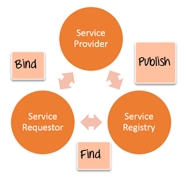

There are two ways to view the web service architecture −
+ The first is to examine the individual roles of each web service actor.
+ The second is to examine the emerging web service protocol stack.
There are 3 major roles within the web service architecture :
The diagram below showcases how the Service provider, the Service requestor and Service registry interact with each other.
A second option for viewing the web service architecture is to examine the emerging web service protocol stack. The stack is still evolving, but currently has four main layers.